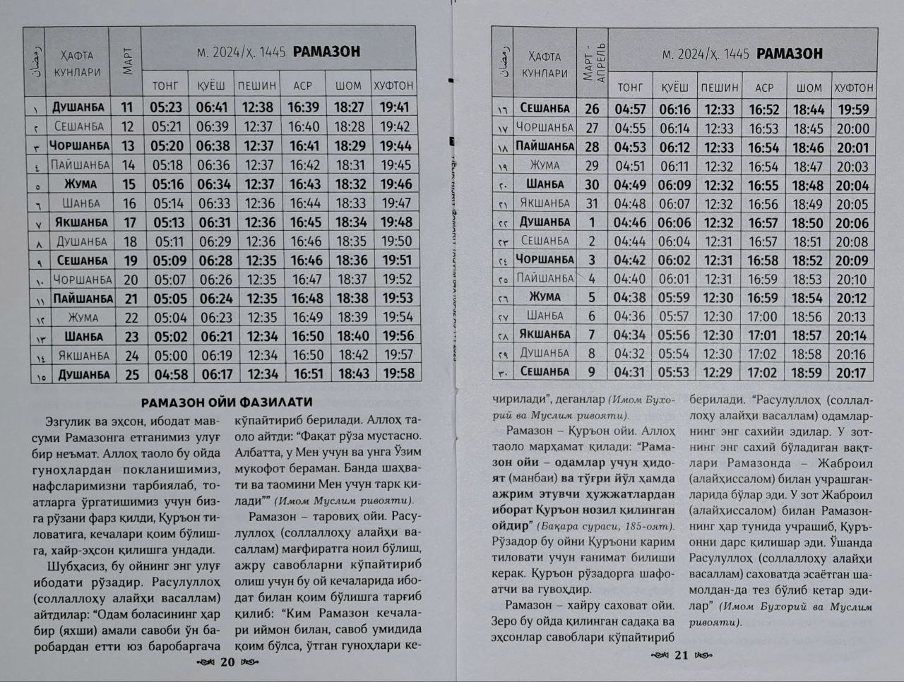
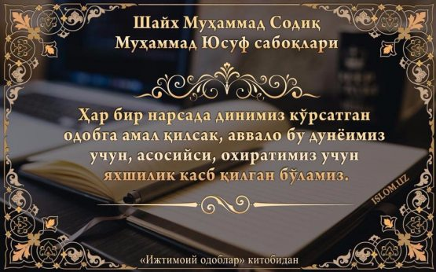
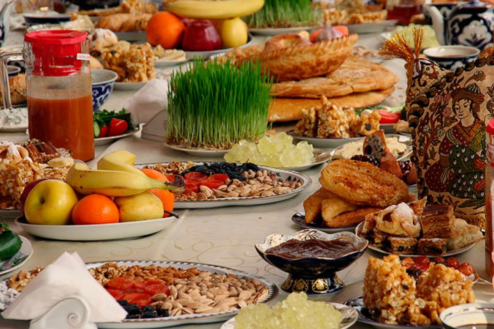
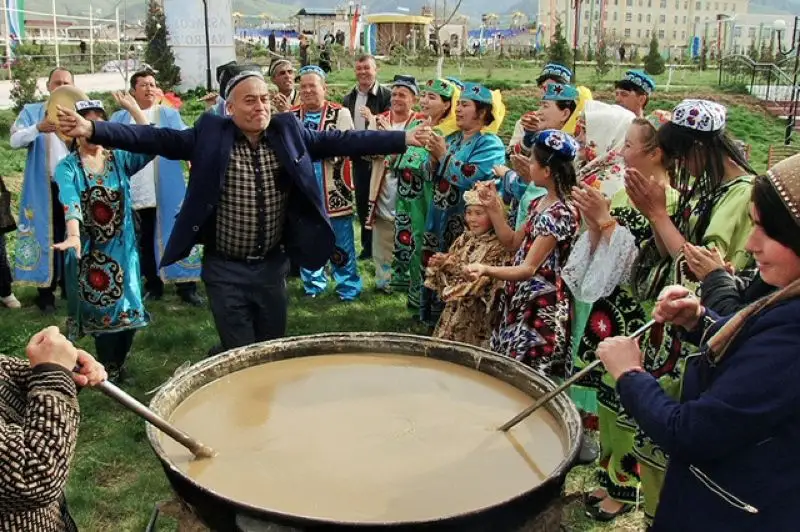
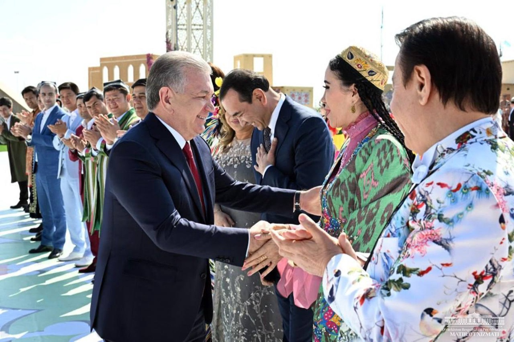
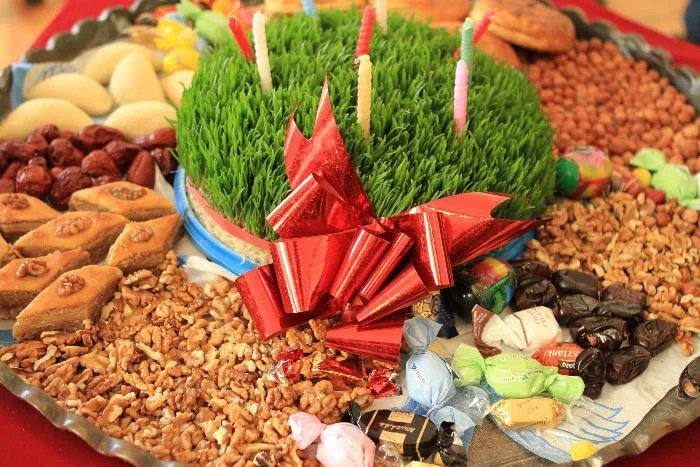

Ko'klamning ikkinchi haftasida 8-Mart Xalqaro xotin-qizlar bayramini nishonlaymiz. Xo'sh, munis onaxonlar va
xotin-qizlar bayramini nishonlashimizning sababi nimada? Bahor bayramlar bilan boshlanadi. Ko'klamning
ikkinchi haftasida 8 Mart Xalqaro xotin-qizlar bayramini nishonlaymiz. Xo'sh, munis onaxonlar va
xotin-qizlar bayramini nishonlashimizning sababi nimada? Nega ayollar bunchalik ulug'lanadi? Xuddi shu kuni
butun dunyo ayollari bayram qiladilarmi? Bu savollarga javob topish uchun tarixga bir nazar tashlaymiz.
Ma'lumotlarga ko'ra, “ayol" arabcha so'z bo'lib, “oila" kalimasi bilan o'zakdoshdir. Biroq 8 Martga nisbatan
“ayol" so'zi emas, balki “xotin-qizlar" degan so'z keng qo'llaniladi.
Ushbu kunning o'tmishiga nazar tashlaydigan bo'lsak, xotin-qizlar bayrami ularning o'z huquqlari uchun
kurashish kunidan kelib chiqqaniga guvoh bo'lishimiz mumkin. Ya'ni, 1857-yil 8-mart kunida Nyu-Yorkning
poyafzal hamda tikuv fabrikasi ishchi xotin-qizlari namoyish o'tkazadilar. Ular 10 soatlik ish kuni, yorug'
va quruq ish xonalari hamda erkaklar bilan bir xil maosh olishlarini talab qilib chiqadilar. Xuddi shu kuni
Nyu-Yorkdagi yuzlab ayollar namoyishlarga chiqib, saylash huquqini ham talab qiladilar. Chunki, o'sha
paytlarda juda kam maosh oluvchi ayollar kuniga 16 soat mexnat qilganlar. Erkaklar esa, turli chiqishlari
orqali 10 soatlik ish kunini qo'lga kiritganlar. 8-martdagi xuddi shu voqeadan so'ng, ayollar tashkiloti
tuziladi va birinchi marta xotin-qizlar unga a'zo bo'ladilar. Biroq, bu kun birinchi marta 1891-yil 19-mart
kuni Avstriya, Daniya, Germaniya va Shveysariyada xotin-qizlar bayrami sifatida nishonlandi. O'shanda
milliondan ortiq erkak va ayollar namoyishlarda ishtirok etadilar. Saylash va saylanish huquqidan tashqari,
ayollar erkaklar bilan teng huquqli bo'lishga harakat qiladilar.
1910-yili Kopengagenda o'tgan xalqaro konferentsiyada 8-mart kunini xalqaro xotin-qizlar kuni sifatida
nishonlash taklifi ko'tarildi. Shundan so'ng ko'pgina mamlakat ayollarining jamiyatda faollashuvi
boshlanadi. Ular mehnat huquqi va hurmatiga ega bo'lish, kambag'allikka qarshi kurash hamda tinchlik uchun
kurash olib boradilar.
Rossiyada esa, xalqaro xotin-qizlar kuni birinchi marta 1913-yili Peterburg shahrida bayram qilindi. Rossiya
Dumasiga ayollar muammosi bo'yicha ariza berildi va hukumat a'zolari 1913-yil 2-mart kuni bir yarim ming
aholini yig'ib, bu masalani hal etishga ruxsat berdi. Unda ayollarning saylash huquqi, onalikni davlat
tomonidan ta'minlash va muhofaza qilish masalalari ko'rib chiqildi.
8-mart xalqaro xotin-qizlar kuni 1965-yildan boshlab dam olish kuni deb belgilandi. Shu kunda hukumat
tantanali tadbirlarda ayollarga nisbatan davlat siyosatining amalga oshirayotgan ishlari to'g'risida hisobot
berardi. Asta-sekin xalqaro xotin-qizlar kuni ayollarning o'z huquqlarini talab qilganliklari uchun emas,
balki ularni qadrlash, hurmat qilish va e'zozlash kuni sifatida nishonlana boshlandi.
Sobiq sho'ro ittifoqi barham topgach, 8 mart — xalqaro xotin-qizlar bayrami MDH
davlatlari: Ozarbayjon, Gruziya, Qozog'iston, Qirg'iziston, Moldaviya, Tojikiston, Turkmaniston, Ukraina,
Belorussiya va O'zbekistonda ham bayram qilina boshladi.
Turkiyada ham dunyoning bir qator davlatlaridan oldin 8 mart — xalqaro xotin-qizlar bayrami nishonlana
boshladi. 1921-yili Respublika e'lon qilinishidan 2 yil oldin, 8- mart mehnatkash ayollar kuni sifatida
nishonlana boshladi. Lekin, 1975 yildan e'tiboran ushbu bayram butun mamlakat bo'ylab keng nishonlana
boshladi. 1990-yillardan e'tiboran ayol jamiyatlarining soni ko'paydi.
Turk jamiyatida ayolning tutgan o'rni katta ahamiyatga ega. Markaziy Osiyo mintaqasi va unga tutash bir
necha oʻlkalarni oʻz ichiga olgan yirik saltanat Turk xoqonligi va boshqa turk davlatlarida hukmdorning
rafiqasi ham davlat boshqaruvida katta mavqega ega bo'lgan. Mamlakatni boshqarishda katta qarorlar ayollar
bilan birgalikda olingan. Ozodlik urushida ham turk ayollar erkaklar bilan tengma-teng mamlakatni dushman
qo'lidan qutqarish uchun katta kurash olib borgan.
Dasturimiz poyoniga yetar ekan, biz ham Turkiya ovozi radiosi xodimlari sifatida 8-Mart Xalqaro xotin-qizlar
bayrami munosabati bilan barcha mo'tabar onaxonlarimizni, opa-singillarimizni chin yurakdan muborakbod
etamiz! Bayramingiz qutlug' bo'lsin!
RAMAZON RO'ZASI TAQVIMI

O'zbekcha
RAMAZON XUSH KELIBSAN
Ahli musulmon kutgan
Barcha,g'amni unutgan.
Savobi ko'kka yetgan
Ramazon xush kelibsan!
Juma bilan do'st bo'lib
Quvonib,yayrab kulib.
Yana bitta yil o'tib
Ramazon xush kelibsan!
Ro'za tutar musulmon
Tanu-joni sog'-omon.
Yaxshilarga qadirdon
Ramazon xush kelibsan!
Ko'rsatib xush odobni
Uyg'otasan oftobni.
Oldik qu'ron kitobni
Ramazon xush kelibsan!
Sog'ingandik juda ham
Senla yo'qolar alam
Shodliklarim bir olam
Ramazon xush kelibsan!
Mehirga ko'mib qalbni
Yulib qalbdagi dardni.
Sinab sabr-toqatni
Ramazon xush kelibsan!
Balolarni daf etgin
Gunoh bo'lsa af etgin.
Yer yuzin poklab ketgin
Ramazon xush kelibsan!
Barcha birdek umidvor
Qolmasin zarra ozor.
Oylar ichra betakror
Ramazon xush kelibsan!
Yaqinlarga,do'stlarga
Shirin qora ko'zlarga.
Haqiqatgo'y so'zlarga
Ramazon xush kelibsan!
Umid berib har jonga
Yo'l ochasan imonga.
Jigar-u,qadirdonga
Ramazon xush kelibsan!
MUALLIF:MIRXALILOVA
SHAXNOZA...
Русский
ДОБРО ПОЖАЛОВАТЬ В РАМАДАН
Люди ждали мусульман
Все, забыли горе.
Синяя награда
Добро пожаловать в Рамадан!
Дружить с пятницей
Радостно,раскидисто смеясь.
Еще один год спустя
Добро пожаловать в Рамадан!
Пост мусульманин
Тану-Джони жив-здоров.
Достойный добра
Добро пожаловать в Рамадан!
Показать хорошие манеры
Ты будешь просыпаться.
Мы взяли книгу Корана
Добро пожаловать в Рамадан!
Мы очень скучаем
Сенла исчезает
Мои радости-это вселенная
Добро пожаловать в Рамадан!
Сердце, похороненное в любви
Вырвать боль в сердце.
Испытать терпение
Добро пожаловать в Рамадан!
Преодолеть беды
Прощай грех.
Очисти землю
Добро пожаловать в Рамадан!
Все одинаково многообещающие
Пусть не останется ни капли боли.
Уникальный в месяцах
Добро пожаловать в Рамадан!
Близким, друзьям
Сладким черным глазам.
К правдивым словам
Добро пожаловать в Рамадан!
Давая надежду каждой душе
Вы прокладываете путь к вере.
Печень-она, дорогая
Добро пожаловать в Рамадан!
АВТОР:МИРХАЛИЛОВА
Шахноза...

NAVRUZ BAYRAMI BILAN TABRIKLIMAN




Navro'z-yangi yil va tabiatning yangilanish bayrami
Navro'z (shuningdek, Noruz, Navro'z, Novrooz va Navro'z deb ham ataladi) eng qimmatli bayram tanaffuslaridan biridir
O'zbekiston. Ba'zan" fors yangi yili " deb nomlangan Navro'z-bu yangilanishni nishonlash uchun imkoniyatdir
tabiat, yangi yilni kutib olish va do'stlaringiz, qo'shnilaringiz va oilangiz bilan mazali taomlardan bahramand bo'lish
oila. Navro'z taomlarining eng mashhuri sumalak bo'lib, unib chiqqan donalardan tayyorlanadi va aralashtiriladi
mahalla ayollari tomonidan butun kun.
Navro'z Xurosondan, Eronning shimoli-sharqida ekanligini bilish qiziq
taxminan 3000 yil. Navro'z odatda 21 mart kuni bo'lib o'tadigan bahorgi tengkunlikda nishonlanadi. Shuningdek
Novruz nomi bilan tanilgan ushbu bayram butun G'arbiy va Markaziy Osiyoda nishonlanadi
qora dengiz va Bolqon.Garchi ko'pchilik Navro'zni dunyoviy bayram sifatida nishonlasa-da, bu A
zardushtiylar uchun diniy. Ushbu bayram kun va tun teng bo'lgan bahor kunini nishonlaydi
va yangi yil boshlanishini belgilaydi. An'anaga ko'ra, odamlar dushmanlarini kechiradilar, qiladilar
hurmatli sadaqa, kambag'allarga yordam bering va yaxshi boshlash uchun uylarini va vijdonlarini tozalang
yil.
Asosiy marosim 21 martga o'tar kechasi bo'lib o'tadi. Asosiy marosim taomini tayyorlash vaqti keldi
bug'doy o'sishi-sumalak. "Mahalla" nomli butun mahalla, asosan ayollar
katta qozon ortida to'planadi: ular doira ichida o'tirishadi, qo'shiqlar kuylashadi, har biri zavqlanishadi
sumalakni aralashtirish uchun o'z navbatini kutmoqda. Ertalab sumalak hali ham qo'shnilarga iliq tarqatilmoqda,
qarindoshlar va do'stlar. Sumalakni tatib ko'rganingizda, tilak qilishingiz kerak-mahalliy aholi buni shunday deyishadi
réalisera.La O'zbekistonda Navro'z bayramlari umuman yangi umidlar bilan chambarchas bog'liq va
taxminlar. Shuning uchun, bu kunda hatto eng yomon dushmanlarni ham kechirish odat tusiga kiradi
janjal, zaif va muhtojlarga yordam berish. Bularning barchasi uyga omadni jalb qiladi - odamlar
bunga ishoning. Yana bir yaxshi misol-davolash. Shu kuni uy bekalari maxsus piroglarni qovuradilar
ko'katlar bilan nishalda tayyorlang-shakar bilan qamchilangan tuxum oqidan iborat shirin desert
va xushbo'y o'tlarning ildizlaridan souffl va samsa va aromatik palov tayyorlang... Bugungi jadval
delikateslarga to'la.
Mo'l-ko'llik yana bir yaxshi belgidir. Bugun har bir uy o'z mehmonlarini kutib oladi: ular kutib olishadi va
o'z ustida ko'p yurish. Va nafaqat mezbonlar. Navro'zda uyda qololmaysiz!
Qishloqlardagi xalq sayillari alohida qiziqish uyg'otmoqda. Bor
an'anaviy savdogarlar musobaqalari, jigit janglari, ot musobaqalari, shuningdek
xalq yarmarkalari, agar milliy xamir uchun suvenirlar hamma narsani sotib olishingiz mumkin qaerda.
Hurmatli aziz ustozlar sizni kevotgan bayramingiz bilan tabrikliman
Qadri bilinadi menga endi goh,
Olis maktabimning o’sha behasham…
Navoiy-ku bizga ustozdir, biroq
Kimdir o’qitgan-ku Navoiyni ham.
Shunday buyuk zotga xarf o’rgatgan kim?…
Odddiy muallim-da, oddiy muallim.
Tuproqdek xokisor, bezovta jonlar,
Ammo qanotida tog’dek ulug’vor,
Ammo Temurdayin Sohibqironlar
Pirim deb , etgain o’pgan bor.
Qaysar Jahongirda yo’l ko’rsatgan kim?
Odddiy muallim-da, oddiy muallim.
Yo’qdan Beruniylar binolar qilgan,
Mashrabni mashhuri dunyolar qilgan,
Husaynni – Ibn Sinolar qilgan,
Iloh so’z o’rgatgan kim?
Odddiy muallim-da, oddiy muallim.
Lekin bu hayot nish-sanchiqlardan,
Qoqilsa ko’targan qo’ltiqlaridan,
Otadek ezilgan g’ussaga botsa,
Boladek quvongan yutuqlaridan,
Uyquda shogrdin o’ylab yotgan kim?…
Odddiy muallim-da, oddiy muallim.
Ulfat ko’p-u ammo bir do’sti hamroh —
Halim topolmadim undan halimroq.
Qancha ustoz ko’rdim, qancha oliygoh,
Olim topolmadim undan olimroq.
Bola yuragimda bеbaho tilsim —
Oddiy muallim-da, oddiy muallim.
Yuzga kiraman mеn Xudo xohlasa —
Yuz yildan keyin bir mo’min o’rtog’im
Ko’zim yopib qo’ysa, jag’im bog’lasa,
So’nggi safar sari otlangan chog’im,
Faqat bir kimsadan bo’ladi qarzim,
Oddiy muallim-da, oddiy muallim!